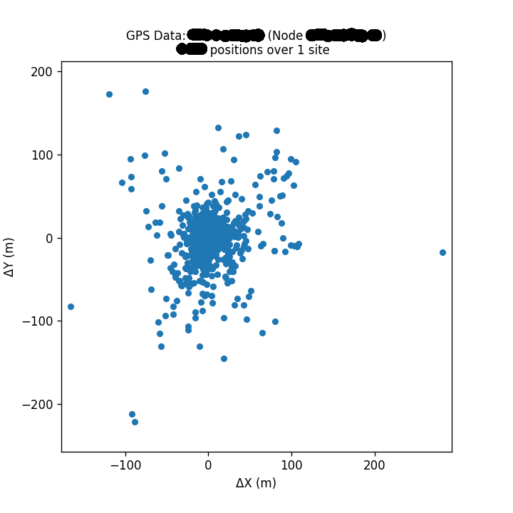

Was steckt in den Standort (Position) Aussendungen?
Empfohlen wird, die Position nur alle 6h (21600 Sekunden) auszusenden.
Natürlich könnt Ihr auch mal eine andere Zeit einstellen, wenn ihr unterwegs seid, am Wandern oder Bergfunken. Wenn ihr aber euren Knoten fix montiert habt, dann sollten 6h ausreichen um regelmäßig den Standort an Kartenanbieter weiterzuleiten oder um den Standort zu überwachen. Die App auf den Smartphones merkt sich auf der Karte wo sich jeder Knoten befindet.
Bitte schaltet auf jeden Fall die Smart-Position Funktion aus.
 Ansonsten sendet euer Knoten in unregelmäßigen Intervallen bzw. alle paar Minuten seinen Standort und müllt das Netzwerk zu. Das passiert vor allem (aber nicht nur), wenn euer Node die GPS Daten über euer Smartphone den Standort bekommt bzw. wenn bei einem fest montiertem Knoten die GPS Genauigkeit durch äussere Einflüsse schwankt. Dies erzeugt ständig neue Standort Aussendungen! Das sieht dann wie in der Grafik aus. Das Problem ist nicht die mangelnde Genauigkeit der Position, sondern dass der Knoten unnötig ständig neue Positionen sendet. Vorallem wenn er sich tatsächlich nicht bewegt.
Eine aktivierte Smart Position läst sich an der unregelmässigen Punktverteilung in der grafischen Auswertung der Standortpacket eine Knoten erkennen.
Was steckt in den Knoteninfo (NodeInfo) Aussendungen?
Die Standard Einstellung ist 3h (10800 Sekunden).
Die Smartphones merken sich in der Knotenliste diese Information für jeden einzelen Knoten. Es ist darum nicht nötig weniger als 3h in den Settings einzustellen.
Das Knoteninfo Packet ist mit das Größte in der Datenmenge, benötigt eine sehr lange Übertragungszeit und sorgt damit für eine höhere Kanalauslastung.
Was steckt in den Gerätetelemetrie Aussendungen?
Als Empfehlung ist in einem solchen Fall der Intervall für die Gerätetelemetrie auf das Maximum einzustellen: 72h (= 259200 Sekunden)
Was steckt in den Umwelttelemtrie Aussendungen?
Stellt den Intervall für die Umwelttelemtrie auf einen Wert der verhältnismässig zum Anwendungsfall ist aber trotzdem eine sinnvolle Auswertung oder Überwachung der Daten gewährleistet. 6h (21600 Sekunden) sind ausreichend um einen entfernten Knoten zuverlässig zu Überwachen.
Einstellung der Sprungweite (Hop Limit)
Es kann je nach Anwendungsfall des Knotens sinnvoll sein die Sprungweite (Hop Limit) seiner Aussendungen zu reduzieren um eine unnötige Ausbreitung
der Packete im Netzwerk zu vermeiden.
z.B. Kann die Sprungweite für einen Wettersensor im Garten auf 1 oder sogar 0 gesetzt werden wenn die Umwelttelemtrie nur bis ins Haus/Wohnung übertragen
werden soll. Damit ist eine direkte Verbindung zwischen den Knoten garantiert aber das restliche Netzwerk wird nicht mit diesen Nachrichten belastet.
Vorallem wenn der Intervall sehr kurz ist (kleiner 1 Stunde).
Vielen Dank an das Schweizer Meshtastic Team, besonders Matthias aka Mesh Traffic Observer für die Ideen und Texte.